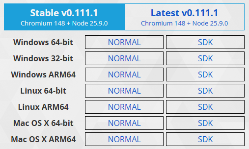

Unfortunately, VSCode can currently not debug NW.js apps with the npm version.
First we need to download the SDK version of NW.js
and put it in the
./bin folder the example app.
Go to the page
nwjs.io/downloads
and download the latest
SDK version of the framework for your platform.
It should look like this:

Extract the downloaded
*.zip file to the repo folder
./Examples/NWjs/bin .
The file
./vscode/launch.json refers to this location
when starting the example app in the VSCode debugger.